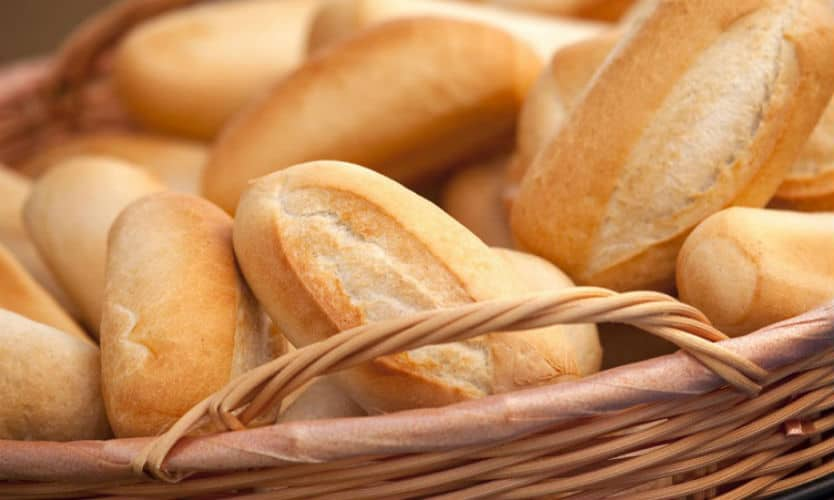
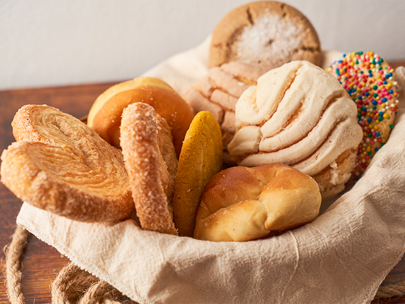

Our delicious traditional breads

Artisan bread
Slowly baked in a wood-fired oven, getting a crispy crust and a tender, cooked interior.

Sweet bread
Carefully baked in a wood-fired oven, giving it a soft texture, irresistible aroma, and perfectly balanced flavor.